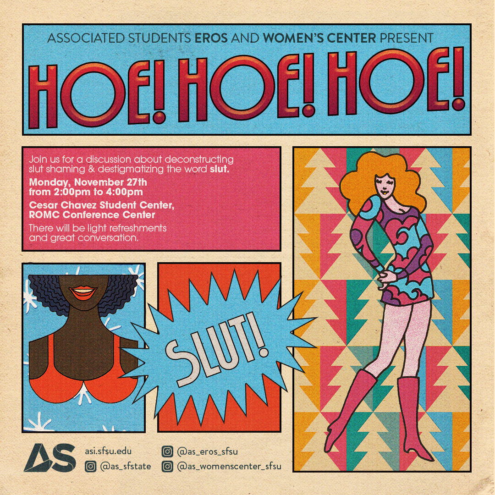
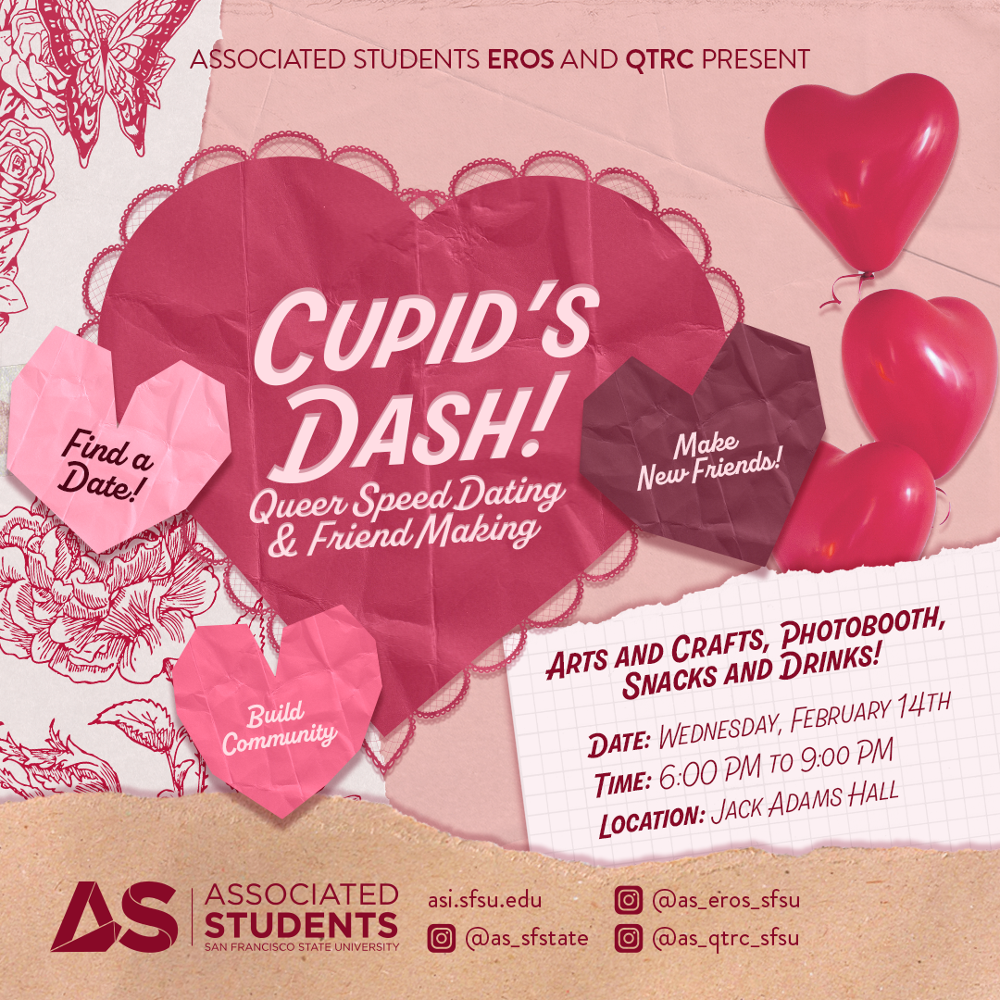

Our Mission
EROS is dedicated to promoting a healthy and respectful understanding of sexuality and gender through judgment-free peer education, diversity, and empowerment. Through the services we provide, we promote the health and wellness of students and offer the opportunity for students to gain a deeper understanding of self, sexuality, and health services in the Bay Area. Inclusive of all identities, backgrounds, and types of sexuality, EROS provides contemporary sexuality education through events, workshops, social media, performances, books and DVDs, and a referral database. EROS connects the campus community by providing presentations and information to students, classes, and organizations. EROS connects the greater San Francisco community by referring students to off-campus resources and collaborating with off-campus organizations for events.
Historical Events
Our annual and recurring events.
Sexuality Career Fair
Our Sexuality Career Fair has reached its 15th annual iteration. Originally called the Sexuality Symposium, the Sexuality Career Fair features professionals in sexuality-related fields such as medical professionals, sex therapists, drag queens, sex workers, and more! Usually featured in Fall.
Hoe Hoe Hoe!
Our Sexuality Career Fair has reached its 15th annual iteration. Originally called the Sexuality Symposium, the Sexuality Career Fair features professionals in sexuality-related fields such as medical professionals, sex therapists, drag queens, sex workers, and more! Usually featured in Fall.
Cupid's Dash: Speed Dating and Friend Making
Our Sexuality Career Fair has reached its 15th annual iteration. Originally called the Sexuality Symposium, the Sexuality Career Fair features professionals in sexuality-related fields such as medical professionals, sex therapists, drag queens, sex workers, and more! Usually featured in Fall.
Kink and Bondage 101

Our Sexuality Career Fair has reached its 15th annual iteration. Originally called the Sexuality Symposium, the Sexuality Career Fair features professionals in sexuality-related fields such as medical professionals, sex therapists, drag queens, sex workers, and more! Usually featured in Fall.